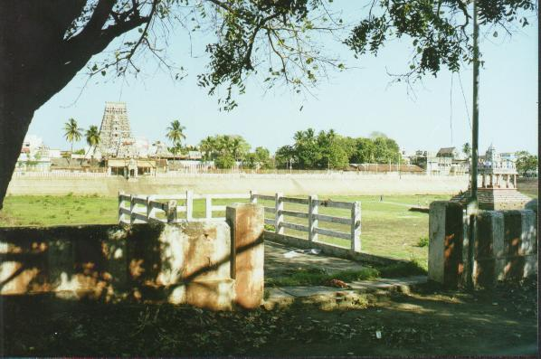

mayilai
- Identifier:
- Modern Name (NIC):
- Modern Name (M.I.): mayilāppūr
- Modern Name (Govt Press):
- Modern Name:
- Modern District & Taluk: DT ( TK)
- Old administrative location: DT ( TK)
- Taluk: Caitāppēṭṭai
- District: Ceṅkalpaṭṭu
- Nearby town:
- Railway station:
- Longit. 80 deg. 16'; Latit. 13 deg. 02' [TO24]
- C.D.Maclean-3: entry: , p. , col. , lines
[ , lat. deg. ', long. deg. ']
- Location: according to PK: Toṇṭai Nāṭu (TO24)
- Name inside hymns:
- Name inside PK:
- Rank inside third volume of PIFI: 226
- Rank inside Civastala Mañcari: 225
- Rank on PY576 map: 17
- Total number of patikam-s: 1
- Campantar: 1 patikam
8 pictures taken in march 2000 (by jlc)



- Patikam 2_47